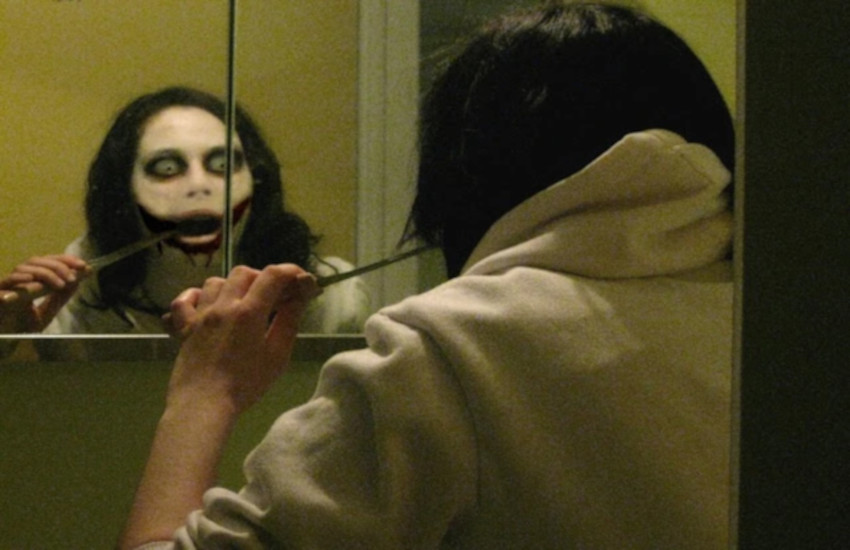
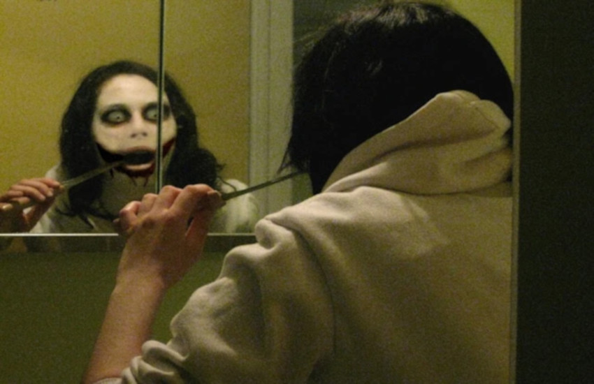

Jeff The Killer
Jeff e sua família acabaram de se mudar para uma nova vizinhança. Seu pai ganhou uma promoção no trabalho, e eles achavam que seria melhor viver em uma dessas vizinhanças ‘requintadas’. Jeff e seu irmão, Liu, não podiam reclamar de uma casa nova e melhor. O que não tinha pra amar? Enquanto eles desempacotavam as coisas, uma vizinha foi conhecê-los.
“Oi” ela disse, “Eu sou Bárbara, moro do outro lado da rua. Bem, eu só queria me apresentar pra vocês e meu filho também." Ela se virou e chamou seu filho. “Billy, esses são os nossos novos vizinhos.” Billy disse “oi”, e correu de volta para o pátio da casa onde voltou a brincar.

“Bem,” disse a mãe de Jeff, “Eu sou Margaret, esse é meu marido Peter, e meus dois filhos, Jeff e Liu.” Se conhecendo, Bárbara logo os convidou para o aniversário de seu filho. Jeff e Liu estavam prontos para rejeitar, quando a mãe deles disse que adorariam comparecer. Então quando eles terminaram de desempacotar as coisas, Jeff foi até sua mãe. "Mãe, por que você aceitaria um convite de uma festinha? Não sei se você não notou, mas eu não sou mais uma criancinha.” “Jeff, nós acabamos de nos mudar pra cá; devíamos mostrar que queremos passar um tempo com nossos vizinhos. Agora, vamos à festa, e ponto final.” Jeff começou a falar, mas parou logo em seguida, sabendo que não poderia fazer nada a respeito. Quando sua mãe dizia alguma coisa, era aquilo e fim de papo. Ele andou até seu novo quarto e desmoronou na cama. Sentou ali e ficou olhando para o teto quando, de repente, ele sentiu algo estranho. Não como uma dor, mas um sentimento estranho. Ele ignorou aquilo como apenas um sentimento qualquer, ouviu a mãe chamá-lo de baixo para pegar suas coisas e desceu.
No outro dia, Jeff desceu as escadas para tomar café da manhã e ir para escola. Quando se sentou para comer, teve o mesmo sentimento estranho do dia anterior. Só que agora mais forte. Ele teve uma pequena dor, como um puxão, mas ignorou mais uma vez. Assim que ele e o irmão terminaram o café, andaram para o ponto de ônibus. Sentaram-se lá, esperando o ônibus. Então, do nada, um garoto de skate pulou por cima deles, por apenas uns centímetros de suas cabeças. Os dois deram um salto, surpresos. “Mas que porra é essa?” A criança deu a volta foi até eles. Ele deu um pisão na ponta do skate, e pegou com a mão. O garoto parecia ter uns 12 anos; um ano mais novo que Jeff, vestia uma camiseta da Aeropostale e um jeans azul rasgado. “Ora, ora, ora. Parece que temos carne nova no pedaço." De repente, mais duas outras crianças apareceram. Um era super magro, e outro era enorme. “Bem, já que vocês são novos aqui, gostaríamos de nos apresentar; Aquele ali é o Keith” Jeff e Liu olharam para o magrinho. Ele tinha uma cara de paradão, que daria pra você um braço esquerdo se precisasse. “E o outro é o Troy” Eles olharam para o gordo. Era um rolha de poço. Aquela criança não devia ter se exercitado desde que começou a engatinhar. O garoto de skate disse “E eu, sou Randy. Agora, deixe-me explicar; para todas as crianças nesse bairro há um preço pequeno para a passagem de ônibus, se é que você me entende.” Liu se levantou, pronto pra socar o garoto até que se virasse do avesso, quando um dos amigos de Randy puxou uma faca e apontou pra ele “Tsc, tsc, tsc, eu pensei que vocês seriam mais cooperativos, mas parece que vamos precisar fazer do jeito mais difícil." O garoto foi até Liu, e tirou a carteira do bolso dele. Jeff teve aquele sentimento de novo. Agora estava realmente forte, uma sensação de queimação. Jeff se levantou, mas Liu pediu para que se sentasse de novo. Ele ignorou e andou em direção do garoto. "Ouça aqui, seu punkzinho, devolva a carteira do meu irmão ou…” Randy colocou a carteira no próprio bolso, e tirou sua faca. “Ah, e o que você vai fazer?” Assim que ele terminou a frase, Jeff socou o garoto no nariz. Quando Randy tentou tocar o rosto, Jeff segurou seu pulso e o quebrou. Randy gritou e Jeff pegou a faca de sua mão. Troy e Keith correram para pegar Jeff, mas ele era muito rápido. Ele jogou Randy no chão. Keith tentou atacá-lo, mas Jeff se abaixou e apunhalou a faca em seu braço. Keith deixou a faca cair, e caiu logo em seguida no chão gritando. Troy também tentou atacá-lo, mas Jeff nem precisou da faca, socou Troy diretamente no estômago, e Troy caiu de joelhos, e quando caiu, vomitou tudo no chão. Liu não conseguiu fazer nada, além de olhar admiradamente para seu irmão. “Jeff, como você.. ?” Isso foi tudo que disse.
 Eles viram o ônibus vindo, e sabiam que seriam culpados por tudo aquilo. Então, começaram a correr o mais rápido que puderam. Enquanto corriam, olharam pra trás e viram o motorista do ônibus correndo para Randy e os outros. Eles correram até a escola, sem se atrever a contar qualquer coisa sobre aquilo. Apenas se sentaram e assistiram as aulas. Liu achava que tinha sido apenas seu irmão batendo em algumas crianças, mas Jeff sabia que era algo a mais. E era algo, algo assustador. Quando tinha aquele sentimento e via o quão poderoso era, a única coisa que desejava era machucar alguém. Ele não gostava como isso soava, mas não conseguia deter-se de se sentir feliz. Sentiu o sentimento estranho sumindo e não voltou pelo resto do dia na escola. Mesmo quando caminhava para casa devido à coisa toda, perto do ponto de ônibus e como agora provavelmente não pegaria mais o ônibus, sentiu-se feliz. Quando voltaram pra casa, seus pais perguntaram como tinha sido o dia deles, e ele disse com uma voz meio sinistra “Foi um ótimo dia”. Na manhã seguinte, ouviu alguém batendo na porta da frente. Desceu as escadas e encontrou dois policiais na porta, com sua mãe olhando pra ele muito zangada. “Jeff, esses policiais estão me dizendo que você atacou três crianças. E que não foi uma briga normal, que eles foram esfaqueados. Esfaqueados, filho!” Jeff olhou para o chão, mostrando para sua mãe que era verdade. "Mãe, eles tinham facas e apontaram para Liu e para mim.” “Filho,” disse um dos policiais, "Nós encontramos três crianças, duas esfaqueadas, outra com uma contusão no estômago e temos testemunhas de que você estava na cena. Agora, o que você tem para nos contar?” Jeff sabia que era inútil. Poderia dizer que ele e Liu tinham sido atacados, mas não havia provas de que não tinham sido eles que atacaram primeiro, não poderiam dizer que não estavam fugindo, porque verdade seja dita, estavam. Então Jeff e Liu não poderiam defender-se. “Filho, chame seu irmão." Jeff não poderia fazer isso, sabendo que só ele tinha batido nos garotos. “Senhor, fui eu. Eu quem bati nos garotos. Liu tentou me segurar, mas não conseguiu me parar.” O policial olhou para seu parceiro e os dois acenaram com a cabeça. “Olha garoto, isso será um ano no Centro de Detenção Juvenil…” “Espere!” falou Liu. Todos olharam para o topo da escada, para vê-lo segurando uma faca. Os policiais pegaram suas armas e apontaram para Liu. “Fui eu, eu bati naqueles punkzinhos. Tenho as marcas pra provar.” Ele levantou as mangas para revelar cortes e contusões, como se estivesse em uma luta. “Filho, coloque a faca no chão," disse o policial. Liu afrouxou os dedos e deixou-a cair no chão. Colocou as mãos para cima e andou até os policiais. "Não Liu! Fui eu, eu que fiz isso!” Jeff falou, com lágrimas escorrendo pelo seu rosto. “Ah, pobre irmãozinho, tentando pegar a culpa pelo que eu fiz. Bem, me levem embora.” O policial levou Liu até a viatura. “Liu, fale pra eles que fui eu! Fale! Fui eu quem bateu naqueles garotos!” A mãe de Jeff colocou a mão no ombro dele. “Por favor, Jeff, você não tem que mentir. Nós sabemos que foi Liu, você não pode impedir. Não faça isso ser mais difícil que já está sendo.” Jeff ficou olhando sem poder fazer nada, enquanto o carro saía velozmente com Liu dentro. Alguns minutos depois, o pai deles estacionou na frente de casa, e vendo o rosto de Jeff, sabia que algo estava errado. “Filho, o que houve?” Jeff não podia responder. Suas cordas vocais estavam tensas de tanto chorar. Em vez disso, a mãe de Jeff andou até seu pai para dar a má notícia à ele, enquanto Jeff chorava na garagem. Depois de uma hora, Jeff voltou para casa, viu que seus pais estavam ambos chocados, tristes e decepcionados. Ele não podia olhar para eles, não podia ver que eles achavam que a culpa era de Liu. Foi dormir, tentando fazer com que a coisa toda saísse de sua mente. Dois dias se passaram, sem notícias de Liu da prisão. Não havia amigos para sair. Nada além de tristeza e culpa. Isso até sábado, quando Jeff foi acordado por sua mãe, com um rosto feliz. "É hoje, Jeff.” disse enquanto abriu as cortinas e deixando uma inundação de luz no quarto de Jeff. “O que é hoje?” Jeff perguntou, ainda meio dormindo. “Ora, é a festa de Billy.” Jeff estava agora totalmente desperto. "Mãe, você está brincando, né? Você não espera que eu vá para a festa de alguma criança depois…” Houve uma longa pausa. “Jeff, nós dois sabemos o que aconteceu, acho que esta festa pode ser a coisa que vai iluminar os dias passados. Agora, vá se vestir.” A mãe de Jeff saiu do quarto e foi se preparar. Jeff lutou para se levantar. Pegou uma camisa qualquer, uma calça jeans e desceu escadas. Viu o pai e a mãe, bem vestidos, sua mãe em um vestido e seu pai em um terno. E pensou: “por que eles sempre usam essas roupas extravagantes para uma festa de criança?" “Filho, isso é tudo que você vai vestir?” disse a mãe de Jeff. “Melhor do que usar algo exagerado.”, disse. Sua mãe escondeu a vontade de gritar e escondeu-a com um sorriso. “Mas Jeff, você poderia se vestir melhor, se quiser causar uma boa impressão", disse o pai. Jeff grunhiu e voltou para seu quarto. “Eu não tenho roupas extravagantes!” ele gritou ao subir as escadas. “Basta pegar alguma coisa.” disse sua mãe, olhou ao redor em seu armário para o que chamava de fantasia. Encontrou um par de calças pretas, que tinha para ocasiões especiais, e uma camiseta, não conseguia encontrar uma camisa para sair. Olhou em volta e só encontra camisas listradas e padronizadas. Nenhuma que combinasse com a calça. Finalmente, encontrou um moletom branco, jogado em uma cadeira e vestiu. "Você vai assim?” ambos disseram. Sua mãe olhou para o relógio. “Oooh, não há tempo para mudar. Vamos embora.”, disse enquanto puxava Jeff e seu pai para fora. Atravessaram a rua até a casa de Bárbara e Billy. Bateram na porta e encontraram Bárbara que, assim como seus pais, estava extravagantemente vestida. Enquanto eles caminhavam para dentro da casa, Jeff só via adultos, não crianças. “As crianças estão lá fora, no quintal. Jeff, que tal você ir conhecer as crianças?" disse Bárbara. Jeff saiu para o jardim que estava cheio de crianças. Elas estavam correndo em trajes estranhos de vaqueiros e atirando um no outro com armas de plástico. De repente, um garoto veio até ele e lhe entregou uma arma de brinquedo e um chapéu. “Hey. Quer brincar?”, disse. “Aah, não mesmo, pirralho. Eu sou muito velho para essas coisas.” O garoto olhou para ele com aquela cara de cachorro pidão. "Po-favô?" disse o menino. “Tudo bem”, disse Jeff. E colocou o chapéu e começou a fingir atirar nas crianças. A princípio, pensou que era uma ideia totalmente ridícula, mas depois começou a realmente se divertir. Pode não ter sido super legal, mas foi a primeira vez que havia feito algo que tirou seus pensamentos de Liu. Assim, brincava com as crianças por um tempo, até que ouviu um barulho. Um barulho estranho de rolamento. Então algo bate nele. Randy, Troy, e Keith pulando a cerca assim como seus skates. Jeff deixou cair a arma falsa e arrancou o chapéu. Randy olhou para Jeff com um ódio ardente. "Olá? Jeff?”, disse. "Nós temos alguns negócios inacabados”. Jeff viu seu nariz machucado. “Eu acho que estamos quites. Eu te dei uma surra e você enviou o Liu para o centro de detenção." Jeff falou enraivecido. Randy tinha fúria nos olhos. “Oh não, eu não jogo para empatar, e sim para ganhar. Você pode ter acabado com a gente no outro dia, mas não hoje.” Quando Randy falou, Jeff correu e Randy foi atrás dele. Ambos caíram no chão. Randy socou o nariz de Jeff, e Jeff agarrou-o pelas orelhas e deu uma cabeçada nele. Jeff empurrou Randy pra longe e ambos se levantaram. As crianças estavam gritando e os pais correndo para fora da casa. Troy e Keith puxaram armas de seus bolsos. "Ninguém se mexe ou tripas vão voar!” eles disseram. Randy puxou uma faca e apunhalou o ombro de Jeff. Jeff gritou e caiu de joelhos. Randy começa a chutá-lo no rosto. Depois de três chutes, Jeff pega o pé de Randy e torce-o, fazendo com que Randy caia no chão. Jeff se levantou e correu em direção a porta dos fundos. Porém, Troy agarrou-o. “Precisa de ajuda?” Ele pegou Jeff pelo colarinho e jogou-o de volta pro pátio através da porta. Enquanto Jeff tenta ficar de pé ele é chutado para o chão novamente. Randy começa a chutar repetidamente Jeff, até que ele começa a tossir sangue. “Vamos Jeff, lute comigo!” Ele pega Jeff e atira-o para a cozinha. Randy vê uma garrafa de vodka em cima do balcão e esmaga o vidro sobre a cabeça de Jeff. “Lute!” Ele joga Jeff de volta para a sala de estar. “Vamos Jeff, olhe para mim!” Jeff olha para cima, o rosto cheio de sangue. “Eu sou quem mandou seu irmão pro centro de detenção! E agora você só vai só sentar ai e deixá-lo apodrecer lá por um ano inteiro! Você deveria se envergonhar!” Jeff começa a se levantar. “Ah, finalmente! Levante e lute!” Jeff agora está de pé, sangue e vodka no rosto. Mais uma vez ele fica com aquela sensação estranha, aquela que ele já não sentia há algum tempo. “Finalmente. Ele está de pé!" Randy diz enquanto corre em direção a Jeff. É quando acontece. Algo dentro de Jeff se encaixa. Seu psicológico é destruído, todo o pensamento racional se foi, tudo o que ele pode fazer, é matar. Ele pega Randy derruba-o ao chão. Ele fica em cima dele e lhe dá um soco direto no peito onde fica o coração. O soco faz com que o coração de Randy pare. Enquanto Randy suspira. Jeff golpeia-o. Soco após soco, o sangue jorra do corpo de Randy, até que ele dá um último suspiro e morre. Todo mundo está olhando para Jeff agora. Os pais, as crianças chorando, até Troy e Keith. Apesar de estarem assombrados, Troy e Keith apontam suas armas para Jeff. Jeff vê as armas apontadas para ele e corre para as escadas. Enquanto corre, Troy e Keith disparam fogo contra ele, todos os tiros perdido. Jeff sobe as escadas. Ele ouve Troy e Keith seguindo-o. Enquanto disparam suas últimas balas, Jeff entra no banheiro, pega o toalheiro e arranca da parede. Troy e Keith correm para o banheiro com as facas em punho preparadas. Troy move sua faca em direção a Jeff, que se afasta e bate com o toalheiro no rosto de Troy. Troy cai duro e agora tudo o que resta é Keith. Ele é mais ágil que Troy, e desvia quando Jeff tentava acerta-lo com o toalheiro. Ele larga a faca e pega Jeff pelo pescoço, empurrando-o contra a parede. Uma coisa como água sanitária que estava na prateleira caiu em cima dos dois. Ambos sentem a pele queimar e começaram a gritar. Jeff enxugou os olhos da melhor forma que pôde, e puxou o toalheiro, acertando direto na a cabeça de Keith. E antes que Keith sangrasse até a morte, deixou escapar um sorriso sinistro. “O que há de tão engraçado?" Jeff perguntou. Keith pegou um isqueiro e ligou-o. “O que é engraçado?", disse, "é que você está coberto de água sanitária e álcool." Jeff arregalou os olhos ao ver Keith jogando o isqueiro nele. Assim que o isqueiro aceso fez contato com ele, as chamas iniciaram. Enquanto o álcool o queimava, a água sanitária branqueava sua pele. Jeff gritava terrivelmente enquanto ardia em fogo. Ele tentou rolar para fora do fogo, mas não adiantava, o álcool tinha feito dele um inferno ambulante. Ele correu pelo corredor, e caiu das escadas. Todos começaram a gritar quando viram Jeff, agora uma tocha-humana, cair no chão, quase morto. A última coisa que Jeff viu foi sua mãe e os outros pais que tentavam apagar as chamas. Foi quando ele desmaiou. Quando Jeff acordou tinha um molde de gesso envolvido em torno de seu rosto. Ele não conseguia ver nada, mas sentiu um molde em seu ombro, e pontos por todo seu corpo. Tentou se levantar, mas ele percebeu que havia alguns tubos em seu braço, e quando ele tentou levantar-se ele caiu, e uma enfermeira correu para ajudá-lo. Eu não acho que você pode sair da cama ainda.” ela disse, enquanto colocava-o de volta em sua cama e reinserido o cateter em seu braço. Jeff sentou-se ali, sem-nenhuma visão, nenhuma ideia do que estava ao seu redor. Finalmente, depois de horas, ele ouviu sua mãe. “Querido, você está bem?”, perguntou ela. Jeff não poderia responder, pois seu rosto estava coberto por gesso. “Oh querido, eu tenho grande notícia. Depois que todas as testemunhas disseram à polícia que Randy tinha atacado você, eles decidiram soltar o Liu.” Isso fez com que Jeff quase pulasse, parando, lembrando-se do tubo sair do seu braço. “Ele estará fora amanhã, e então você dois poderão estar juntos de novo”. A mãe do Jeff abraça-o e se despede. As semanas seguintes foram formadas apenas onde Jeff era visitado pela sua família. Até o dia onde os seus curativos deveriam ser retiradas. Sua família estava lá para vê-lo, como estaria agora sua aparência. Quando os médicos desembrulharam as ataduras do rosto do Jeff todos estavam na ponta das cadeiras. Eles esperaram até o último curativo sobre o rosto de Jeff serem removidos. “Vamos esperar o melhor,” disse o médico. Ele rapidamente puxa o último pano, deixando agora o rosto de Jeff amostra. A mãe de Jeff grita ao ver seu rosto, Liu e o pai de Jeff olham horrorizados para ele. “O quê? O que aconteceu com meu rosto?” Jeff disse. Ele se levanta rapidamente, ignorando a tontura, e corre para o banheiro. Ele olhou no espelho e viu a causa da aflição de todos. Sua cara. Era… Era simplesmente horrível. Seus lábios foram queimados a um profundo tom de vermelho. Seu rosto se transformou em uma cor branca pura, e seu cabelo chamuscaram de marrom a preto. Ele lentamente colocou a mão em seu rosto. Era como se encostasse em couro agora. Ele olhou de volta para sua família depois de volta para o espelho. Até que Liu, tentando amenizar a situação fala "Não é assim tão ruim….” "Não é tão ruim!?”, disse Jeff, "é perfeito!” Sua família toda ficou surpreendida. Jeff começou a rir incontrolavelmente seus pais percebendo que seu olho esquerdo e a mão tremiam. “Umm… Jeff, você está bem?” “Bem? Eu nunca me senti mais feliz! Ha ha ha ha ha haaaaaa, olhe para mim. Esse cara caí perfeitamente comigo!” Ele não conseguia parar de rir. Ele acariciou seu rosto sentindo-o. Olhando no espelho. O que causou isso? Bem, você deve se lembrar que quando Jeff estava lutando Randy algo em sua mente, sua sanidade, estalou. E desta vez tinha sido permanente. Agora ele foi deixado como uma máquina descontrolada de matar, e seus pais não tinham noção disso. “Doutor”, disse a mãe de Jeff, “Meu filho...é, você sabe.. Está bem? Na cabeça?" “Ah sim, este comportamento é típico para os pacientes que tomam muitas grandes quantidades de analgésicos. Se seu comportamento não mudar em poucas semanas, traga-o de volta aqui, e nós vamos dar-lhe um teste psicológico." “Ah,sim. Obrigada doutor.” A mãe de Jeff até ele. “Jeff, querido. É hora de ir.” Jeff olha de longe o espelho, seu rosto ainda formando um sorriso louco. “Tudo bem, mamãe. Ha ha haaaaaahahaaaaa!” sua mãe segurou-o pelos ombros e o levou para pegar suas roupas. “Isto é o que veio”, disse a moça no balcão. A mãe de Jeff olhou para baixo para ver as calças pretas e o moletom branco seu filho usara no dia da festa. Agora eles estavam limpos do sangue e costuradas. A mãe de Jeff levou-o para seu quarto e fez com que ele colocasse sua roupa. Então eles deixaram, não sabendo que este era seu último dia de vida. Mais tarde naquela noite, a mãe de Jeff acordou com um som vindo do banheiro. Soou como se alguém estivesse chorando. Ela lentamente caminhou para ver o que era. Quando ela olhou para o banheiro ela viu uma visão horrenda. Jeff tinha pego uma faca e esculpido um sorriso em seu rosto.

Eles viram o ônibus vindo, e sabiam que seriam culpados por tudo aquilo. Então, começaram a correr o mais rápido que puderam. Enquanto corriam, olharam pra trás e viram o motorista do ônibus correndo para Randy e os outros. Eles correram até a escola, sem se atrever a contar qualquer coisa sobre aquilo. Apenas se sentaram e assistiram as aulas. Liu achava que tinha sido apenas seu irmão batendo em algumas crianças, mas Jeff sabia que era algo a mais. E era algo, algo assustador. Quando tinha aquele sentimento e via o quão poderoso era, a única coisa que desejava era machucar alguém. Ele não gostava como isso soava, mas não conseguia deter-se de se sentir feliz. Sentiu o sentimento estranho sumindo e não voltou pelo resto do dia na escola. Mesmo quando caminhava para casa devido à coisa toda, perto do ponto de ônibus e como agora provavelmente não pegaria mais o ônibus, sentiu-se feliz. Quando voltaram pra casa, seus pais perguntaram como tinha sido o dia deles, e ele disse com uma voz meio sinistra “Foi um ótimo dia”. Na manhã seguinte, ouviu alguém batendo na porta da frente. Desceu as escadas e encontrou dois policiais na porta, com sua mãe olhando pra ele muito zangada. “Jeff, esses policiais estão me dizendo que você atacou três crianças. E que não foi uma briga normal, que eles foram esfaqueados. Esfaqueados, filho!” Jeff olhou para o chão, mostrando para sua mãe que era verdade. "Mãe, eles tinham facas e apontaram para Liu e para mim.” “Filho,” disse um dos policiais, "Nós encontramos três crianças, duas esfaqueadas, outra com uma contusão no estômago e temos testemunhas de que você estava na cena. Agora, o que você tem para nos contar?” Jeff sabia que era inútil. Poderia dizer que ele e Liu tinham sido atacados, mas não havia provas de que não tinham sido eles que atacaram primeiro, não poderiam dizer que não estavam fugindo, porque verdade seja dita, estavam. Então Jeff e Liu não poderiam defender-se. “Filho, chame seu irmão." Jeff não poderia fazer isso, sabendo que só ele tinha batido nos garotos. “Senhor, fui eu. Eu quem bati nos garotos. Liu tentou me segurar, mas não conseguiu me parar.” O policial olhou para seu parceiro e os dois acenaram com a cabeça. “Olha garoto, isso será um ano no Centro de Detenção Juvenil…” “Espere!” falou Liu. Todos olharam para o topo da escada, para vê-lo segurando uma faca. Os policiais pegaram suas armas e apontaram para Liu. “Fui eu, eu bati naqueles punkzinhos. Tenho as marcas pra provar.” Ele levantou as mangas para revelar cortes e contusões, como se estivesse em uma luta. “Filho, coloque a faca no chão," disse o policial. Liu afrouxou os dedos e deixou-a cair no chão. Colocou as mãos para cima e andou até os policiais. "Não Liu! Fui eu, eu que fiz isso!” Jeff falou, com lágrimas escorrendo pelo seu rosto. “Ah, pobre irmãozinho, tentando pegar a culpa pelo que eu fiz. Bem, me levem embora.” O policial levou Liu até a viatura. “Liu, fale pra eles que fui eu! Fale! Fui eu quem bateu naqueles garotos!” A mãe de Jeff colocou a mão no ombro dele. “Por favor, Jeff, você não tem que mentir. Nós sabemos que foi Liu, você não pode impedir. Não faça isso ser mais difícil que já está sendo.” Jeff ficou olhando sem poder fazer nada, enquanto o carro saía velozmente com Liu dentro. Alguns minutos depois, o pai deles estacionou na frente de casa, e vendo o rosto de Jeff, sabia que algo estava errado. “Filho, o que houve?” Jeff não podia responder. Suas cordas vocais estavam tensas de tanto chorar. Em vez disso, a mãe de Jeff andou até seu pai para dar a má notícia à ele, enquanto Jeff chorava na garagem. Depois de uma hora, Jeff voltou para casa, viu que seus pais estavam ambos chocados, tristes e decepcionados. Ele não podia olhar para eles, não podia ver que eles achavam que a culpa era de Liu. Foi dormir, tentando fazer com que a coisa toda saísse de sua mente. Dois dias se passaram, sem notícias de Liu da prisão. Não havia amigos para sair. Nada além de tristeza e culpa. Isso até sábado, quando Jeff foi acordado por sua mãe, com um rosto feliz. "É hoje, Jeff.” disse enquanto abriu as cortinas e deixando uma inundação de luz no quarto de Jeff. “O que é hoje?” Jeff perguntou, ainda meio dormindo. “Ora, é a festa de Billy.” Jeff estava agora totalmente desperto. "Mãe, você está brincando, né? Você não espera que eu vá para a festa de alguma criança depois…” Houve uma longa pausa. “Jeff, nós dois sabemos o que aconteceu, acho que esta festa pode ser a coisa que vai iluminar os dias passados. Agora, vá se vestir.” A mãe de Jeff saiu do quarto e foi se preparar. Jeff lutou para se levantar. Pegou uma camisa qualquer, uma calça jeans e desceu escadas. Viu o pai e a mãe, bem vestidos, sua mãe em um vestido e seu pai em um terno. E pensou: “por que eles sempre usam essas roupas extravagantes para uma festa de criança?" “Filho, isso é tudo que você vai vestir?” disse a mãe de Jeff. “Melhor do que usar algo exagerado.”, disse. Sua mãe escondeu a vontade de gritar e escondeu-a com um sorriso. “Mas Jeff, você poderia se vestir melhor, se quiser causar uma boa impressão", disse o pai. Jeff grunhiu e voltou para seu quarto. “Eu não tenho roupas extravagantes!” ele gritou ao subir as escadas. “Basta pegar alguma coisa.” disse sua mãe, olhou ao redor em seu armário para o que chamava de fantasia. Encontrou um par de calças pretas, que tinha para ocasiões especiais, e uma camiseta, não conseguia encontrar uma camisa para sair. Olhou em volta e só encontra camisas listradas e padronizadas. Nenhuma que combinasse com a calça. Finalmente, encontrou um moletom branco, jogado em uma cadeira e vestiu. "Você vai assim?” ambos disseram. Sua mãe olhou para o relógio. “Oooh, não há tempo para mudar. Vamos embora.”, disse enquanto puxava Jeff e seu pai para fora. Atravessaram a rua até a casa de Bárbara e Billy. Bateram na porta e encontraram Bárbara que, assim como seus pais, estava extravagantemente vestida. Enquanto eles caminhavam para dentro da casa, Jeff só via adultos, não crianças. “As crianças estão lá fora, no quintal. Jeff, que tal você ir conhecer as crianças?" disse Bárbara. Jeff saiu para o jardim que estava cheio de crianças. Elas estavam correndo em trajes estranhos de vaqueiros e atirando um no outro com armas de plástico. De repente, um garoto veio até ele e lhe entregou uma arma de brinquedo e um chapéu. “Hey. Quer brincar?”, disse. “Aah, não mesmo, pirralho. Eu sou muito velho para essas coisas.” O garoto olhou para ele com aquela cara de cachorro pidão. "Po-favô?" disse o menino. “Tudo bem”, disse Jeff. E colocou o chapéu e começou a fingir atirar nas crianças. A princípio, pensou que era uma ideia totalmente ridícula, mas depois começou a realmente se divertir. Pode não ter sido super legal, mas foi a primeira vez que havia feito algo que tirou seus pensamentos de Liu. Assim, brincava com as crianças por um tempo, até que ouviu um barulho. Um barulho estranho de rolamento. Então algo bate nele. Randy, Troy, e Keith pulando a cerca assim como seus skates. Jeff deixou cair a arma falsa e arrancou o chapéu. Randy olhou para Jeff com um ódio ardente. "Olá? Jeff?”, disse. "Nós temos alguns negócios inacabados”. Jeff viu seu nariz machucado. “Eu acho que estamos quites. Eu te dei uma surra e você enviou o Liu para o centro de detenção." Jeff falou enraivecido. Randy tinha fúria nos olhos. “Oh não, eu não jogo para empatar, e sim para ganhar. Você pode ter acabado com a gente no outro dia, mas não hoje.” Quando Randy falou, Jeff correu e Randy foi atrás dele. Ambos caíram no chão. Randy socou o nariz de Jeff, e Jeff agarrou-o pelas orelhas e deu uma cabeçada nele. Jeff empurrou Randy pra longe e ambos se levantaram. As crianças estavam gritando e os pais correndo para fora da casa. Troy e Keith puxaram armas de seus bolsos. "Ninguém se mexe ou tripas vão voar!” eles disseram. Randy puxou uma faca e apunhalou o ombro de Jeff. Jeff gritou e caiu de joelhos. Randy começa a chutá-lo no rosto. Depois de três chutes, Jeff pega o pé de Randy e torce-o, fazendo com que Randy caia no chão. Jeff se levantou e correu em direção a porta dos fundos. Porém, Troy agarrou-o. “Precisa de ajuda?” Ele pegou Jeff pelo colarinho e jogou-o de volta pro pátio através da porta. Enquanto Jeff tenta ficar de pé ele é chutado para o chão novamente. Randy começa a chutar repetidamente Jeff, até que ele começa a tossir sangue. “Vamos Jeff, lute comigo!” Ele pega Jeff e atira-o para a cozinha. Randy vê uma garrafa de vodka em cima do balcão e esmaga o vidro sobre a cabeça de Jeff. “Lute!” Ele joga Jeff de volta para a sala de estar. “Vamos Jeff, olhe para mim!” Jeff olha para cima, o rosto cheio de sangue. “Eu sou quem mandou seu irmão pro centro de detenção! E agora você só vai só sentar ai e deixá-lo apodrecer lá por um ano inteiro! Você deveria se envergonhar!” Jeff começa a se levantar. “Ah, finalmente! Levante e lute!” Jeff agora está de pé, sangue e vodka no rosto. Mais uma vez ele fica com aquela sensação estranha, aquela que ele já não sentia há algum tempo. “Finalmente. Ele está de pé!" Randy diz enquanto corre em direção a Jeff. É quando acontece. Algo dentro de Jeff se encaixa. Seu psicológico é destruído, todo o pensamento racional se foi, tudo o que ele pode fazer, é matar. Ele pega Randy derruba-o ao chão. Ele fica em cima dele e lhe dá um soco direto no peito onde fica o coração. O soco faz com que o coração de Randy pare. Enquanto Randy suspira. Jeff golpeia-o. Soco após soco, o sangue jorra do corpo de Randy, até que ele dá um último suspiro e morre. Todo mundo está olhando para Jeff agora. Os pais, as crianças chorando, até Troy e Keith. Apesar de estarem assombrados, Troy e Keith apontam suas armas para Jeff. Jeff vê as armas apontadas para ele e corre para as escadas. Enquanto corre, Troy e Keith disparam fogo contra ele, todos os tiros perdido. Jeff sobe as escadas. Ele ouve Troy e Keith seguindo-o. Enquanto disparam suas últimas balas, Jeff entra no banheiro, pega o toalheiro e arranca da parede. Troy e Keith correm para o banheiro com as facas em punho preparadas. Troy move sua faca em direção a Jeff, que se afasta e bate com o toalheiro no rosto de Troy. Troy cai duro e agora tudo o que resta é Keith. Ele é mais ágil que Troy, e desvia quando Jeff tentava acerta-lo com o toalheiro. Ele larga a faca e pega Jeff pelo pescoço, empurrando-o contra a parede. Uma coisa como água sanitária que estava na prateleira caiu em cima dos dois. Ambos sentem a pele queimar e começaram a gritar. Jeff enxugou os olhos da melhor forma que pôde, e puxou o toalheiro, acertando direto na a cabeça de Keith. E antes que Keith sangrasse até a morte, deixou escapar um sorriso sinistro. “O que há de tão engraçado?" Jeff perguntou. Keith pegou um isqueiro e ligou-o. “O que é engraçado?", disse, "é que você está coberto de água sanitária e álcool." Jeff arregalou os olhos ao ver Keith jogando o isqueiro nele. Assim que o isqueiro aceso fez contato com ele, as chamas iniciaram. Enquanto o álcool o queimava, a água sanitária branqueava sua pele. Jeff gritava terrivelmente enquanto ardia em fogo. Ele tentou rolar para fora do fogo, mas não adiantava, o álcool tinha feito dele um inferno ambulante. Ele correu pelo corredor, e caiu das escadas. Todos começaram a gritar quando viram Jeff, agora uma tocha-humana, cair no chão, quase morto. A última coisa que Jeff viu foi sua mãe e os outros pais que tentavam apagar as chamas. Foi quando ele desmaiou. Quando Jeff acordou tinha um molde de gesso envolvido em torno de seu rosto. Ele não conseguia ver nada, mas sentiu um molde em seu ombro, e pontos por todo seu corpo. Tentou se levantar, mas ele percebeu que havia alguns tubos em seu braço, e quando ele tentou levantar-se ele caiu, e uma enfermeira correu para ajudá-lo. Eu não acho que você pode sair da cama ainda.” ela disse, enquanto colocava-o de volta em sua cama e reinserido o cateter em seu braço. Jeff sentou-se ali, sem-nenhuma visão, nenhuma ideia do que estava ao seu redor. Finalmente, depois de horas, ele ouviu sua mãe. “Querido, você está bem?”, perguntou ela. Jeff não poderia responder, pois seu rosto estava coberto por gesso. “Oh querido, eu tenho grande notícia. Depois que todas as testemunhas disseram à polícia que Randy tinha atacado você, eles decidiram soltar o Liu.” Isso fez com que Jeff quase pulasse, parando, lembrando-se do tubo sair do seu braço. “Ele estará fora amanhã, e então você dois poderão estar juntos de novo”. A mãe do Jeff abraça-o e se despede. As semanas seguintes foram formadas apenas onde Jeff era visitado pela sua família. Até o dia onde os seus curativos deveriam ser retiradas. Sua família estava lá para vê-lo, como estaria agora sua aparência. Quando os médicos desembrulharam as ataduras do rosto do Jeff todos estavam na ponta das cadeiras. Eles esperaram até o último curativo sobre o rosto de Jeff serem removidos. “Vamos esperar o melhor,” disse o médico. Ele rapidamente puxa o último pano, deixando agora o rosto de Jeff amostra. A mãe de Jeff grita ao ver seu rosto, Liu e o pai de Jeff olham horrorizados para ele. “O quê? O que aconteceu com meu rosto?” Jeff disse. Ele se levanta rapidamente, ignorando a tontura, e corre para o banheiro. Ele olhou no espelho e viu a causa da aflição de todos. Sua cara. Era… Era simplesmente horrível. Seus lábios foram queimados a um profundo tom de vermelho. Seu rosto se transformou em uma cor branca pura, e seu cabelo chamuscaram de marrom a preto. Ele lentamente colocou a mão em seu rosto. Era como se encostasse em couro agora. Ele olhou de volta para sua família depois de volta para o espelho. Até que Liu, tentando amenizar a situação fala "Não é assim tão ruim….” "Não é tão ruim!?”, disse Jeff, "é perfeito!” Sua família toda ficou surpreendida. Jeff começou a rir incontrolavelmente seus pais percebendo que seu olho esquerdo e a mão tremiam. “Umm… Jeff, você está bem?” “Bem? Eu nunca me senti mais feliz! Ha ha ha ha ha haaaaaa, olhe para mim. Esse cara caí perfeitamente comigo!” Ele não conseguia parar de rir. Ele acariciou seu rosto sentindo-o. Olhando no espelho. O que causou isso? Bem, você deve se lembrar que quando Jeff estava lutando Randy algo em sua mente, sua sanidade, estalou. E desta vez tinha sido permanente. Agora ele foi deixado como uma máquina descontrolada de matar, e seus pais não tinham noção disso. “Doutor”, disse a mãe de Jeff, “Meu filho...é, você sabe.. Está bem? Na cabeça?" “Ah sim, este comportamento é típico para os pacientes que tomam muitas grandes quantidades de analgésicos. Se seu comportamento não mudar em poucas semanas, traga-o de volta aqui, e nós vamos dar-lhe um teste psicológico." “Ah,sim. Obrigada doutor.” A mãe de Jeff até ele. “Jeff, querido. É hora de ir.” Jeff olha de longe o espelho, seu rosto ainda formando um sorriso louco. “Tudo bem, mamãe. Ha ha haaaaaahahaaaaa!” sua mãe segurou-o pelos ombros e o levou para pegar suas roupas. “Isto é o que veio”, disse a moça no balcão. A mãe de Jeff olhou para baixo para ver as calças pretas e o moletom branco seu filho usara no dia da festa. Agora eles estavam limpos do sangue e costuradas. A mãe de Jeff levou-o para seu quarto e fez com que ele colocasse sua roupa. Então eles deixaram, não sabendo que este era seu último dia de vida. Mais tarde naquela noite, a mãe de Jeff acordou com um som vindo do banheiro. Soou como se alguém estivesse chorando. Ela lentamente caminhou para ver o que era. Quando ela olhou para o banheiro ela viu uma visão horrenda. Jeff tinha pego uma faca e esculpido um sorriso em seu rosto.
